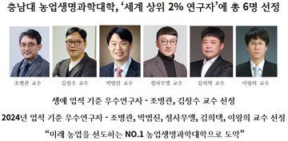
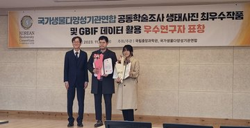

News
실험실 소식 Latest Updates
농업기계공학과 대학원생, 한국축산학회 국제 연합심포지엄서 발표상 수상
농업생명과학대학 농업기계공학과 대학원생(지도교수 이왕희)들이 국내 축산 분야 대표 학술대회에서 우수한 연구 성과를 인정받으며 발표상을 수상했다.

충남대 농업생명과학대학, '세계 상위 2% 연구자'에 총 6명 선정
미국 스탠퍼드대학교와 출판사 엘스비어(Elsevier)가 공동 발표한 'Top 2% Scientists List'에서 우리 농업생명과학대학 총 6명의 교수가 선정되며, 국내 최고 거점국립대 농업생명과학대학으로서의 위상을 공고히 했다.

스마트농업시스템학과 황정호, 윤선희 학생 과학기술정보통신부장관, 국립중앙과학관장상 수상
농업생명과학대학 바이오시스템기계공학과 이왕희교수의 지도학생인 스마트농업시스템학과 황정호 박사수료생이 과학기술정보통신부장관상을 수상하였으며, 윤선희 박사과정생이 국립중앙과학관장상을 수상하였다.